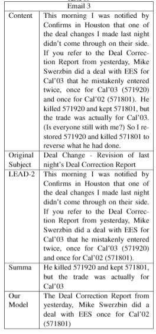

I Introduction
Subject Line Generation (SLG) is a novel topic in NLP email research. Subject lines could be considered as a short summary of the email content. Therefore Subject Line Generation (SLG) task is similar to text summarization task and natural language generation task. For this project, the system takes email content drafted by users as input and generate potential subject line based on the email body. In general, SLG is a new and tough task. Email subject lines are generally much shorter than summaries of articles, which means they require a higher compression ratio. In addition, defining a "good" subject line is difficult. It is common to see that people struggle in composing a good subject line when they writing important emails. To address these problems mentioned above and facilitate comparisons, we applied a dummy generator (LEAD-2),BLEU metric and human rating process for reference. The Dummy Generator use the first two sentences as subject line. We evaluated our achievement based on three standards: did the model outperform a dummy generator? Did it outperform some baseline models? Did it outperform the original subject lines(human generated subject lines)? If our SLG system can outperform the dummy generator and some baseline models, we would consider it as a success.
II Data
The experiment was conducted on the Enron Email Dataset. The dataset is provided by the CALO Project, which can be download from this Link. This project used the May 7, 2015 Version of dataset which contains 0.5 million email records.
As shown in the following figure, the dataset has redundancy issue with lots of duplicated contents.
In addition, some senders didn't put much effort on the subjects. Most of the subject lines contains less than 4 words.
To handle these problems, first we filtered out emails which subject lines or contents are too short. The next we reduced the redundancy of the dataset by removing the replies and forwards. Then we use regular expressions to cleaned up the content and eliminated unimportant components like greetings and salutations.Examples of preprocessing:
data=data[data['Subject'].apply(lambda x: x.count(' ')>4) & data['content'].apply(lambda x: x.count(' ')>40)]
data=data[~data['content'].str.contains('Forwarded by')]
RE='^.*?:'
data=re.sub(RE,'', data)
After we cleaned up the dataset and removed the duplicated contents, the final number of emails is 44634. We devided the cleaned dataset into train and test set. The number of records in each set are 40203 and 4431 respectively.
III Methods
1.Our Model
As discussed above, the main challenge lies in SLG task is the high compression rate. To solve this problem, we proposed a 2-step SLG system. One step is filter out unimportant sentences, and another step is to summarize the sentences we keep. In the first step, we apply TextRank method to compute the cosine similarity of each pair of sentences in the email content. We create a simliarity matrix for each email, then compute the PageRank with a damping factor of 0.85 on 10 iterations. We use the following function to compute the PageRank.
The second step is to summarize the selected sentences into one or two sentences. We use a LSTM based summarization model pysummarization for this task.The pysummarization implement Encoder-Decoder LSTM with an Attention mechanism to improve the accuracy of summarization.
2.Baseline Models and Evaluation
BLEU is a widely used automatic machine translation evaluation system which uses a modified form of precision to compare a candidate against reference translations. We use original subject lines as references and generated subject lines as candidates with a weight set of [0.25,0.25,0.25,0.25]. For human evaluation, we randomly sampled 20 emails and invite 2 human raters to read the contents. Then raters rated the original subject lines and the subject lines generated by baseline models and our model on a scale of 0-2. 0 means poor, 1 means informative or succinct and 2 means informative and succinct. Then we computed the average rating score for each model.
IV Results and Discussions
Table 1 to Table 3 show 3 example emails and results generated by baseline models and our model. The first email is an advertisement. The second is a reply from data service. The third is a working report discussing a complicated issue and difficult for human to understand. The original subject of the second email does not make snese, other two are reasonable.
The dummy generator LEAD-2 is simply, fast and unexpected good. Usually LEAD-2 gives informative but verbose subject line.
Summa did a good job for email 1. For more difficult tasks like email 2 and 3, it sometimes lose the coherence with the email content.
Our model generates a catchy and informative subject line for email 1. However, the second subject line does not make sense and the third one is contrary to the fact given by the content and might be misleading.
The table above shows that our model outperformed two baselines with BLEU evaluation, but human raters slightly prefer Summa's results.
Although the orginal subject lines are not perfect(recieved an average score of 1.3 out of 2), neither the baseline models nor our model can compete with original subject lines, which indicates that there is still a large space for improvement. We will discuss the areas we have struggled in following in this report to provide more research questions and opportunities for SLG task.
V What’s Next
1.Incorporating Meta Information
For future works, we are interested in generating catchy subject lines by incorporating meta information like user networks, previous conversation history, time, location and environments etc.
2.Improving the Bidirectional Encoder-decoder LSTM Neural Network
We also built a bidirectional encoder-decoder LSTM neural network with 50-dimension GloVe embeddings in keras and trained on the dataset. Figure above shows the structure of our LSTM model. 50 dimensions Pretrained GloVe vectors is used for the encoder input sequence. We use a bidirectional lstm as encoder. The decoder is a unidirectional lstm with a linear activation. We use RMSProp as optimizer with Mean Square Error (MSE) loss function. This model is Computationally expensive and costs lots of time to train. We only trained the model for 10 epochs then ran out of RAM. The performance was poor since it failed to generate subject lines that make sense. Most of the generated subject lines look like ['today','for','for','for','meeting','for','for',...]". Therefore we didn't use this model for evaluation. Loss and Accuracy are reported in Figures below. It looks like the model didn't improve a lot during the first 10 epochs. In future, we would like to modify the architecture of this model, train it for more epochs and fine-tune the hyper-parameters.The model may achieve a better performance.
3.Training on dataset annotated by human annotators
In this project, we use original subject lines as references. Human annotation is expensive so we didn't do that. However, it might cause problems. Based on human rating results, the quality of original email subjects is not good enough for references. For example, the sender may assume some knowledge is already known by the receiver so they didn't contain those important information in the subject line. Another concern is the original subject line may just be one of the potential "effective" subject lines. If Each email can be annotated with several subject lines by human annotators, the model may achieve a better result.
References
Shi-Qi Ayana, Yan-Kai Shen, Cun-Chao an TuYu Zhao Lin, Liu Zhi-Yuan, and Sun Mao-Song.2017. Recent advances on neural headline gener-ation.Journal of Computer Science and Technol-ogy32(4):768–784.https://doi.org/10.1007/s11390-017-1758-3.
R. Mihalcea and P. Tarau. 2004. TextRank: Bringingorder into texts. InProceedings of EMNLP-04andthe 2004 Conference on Empirical Methods in Nat-ural Language Processing.
Rui Zhang and Joel Tetreault. 2019. This email couldsave your life: Introducing the task of email subjectline generation